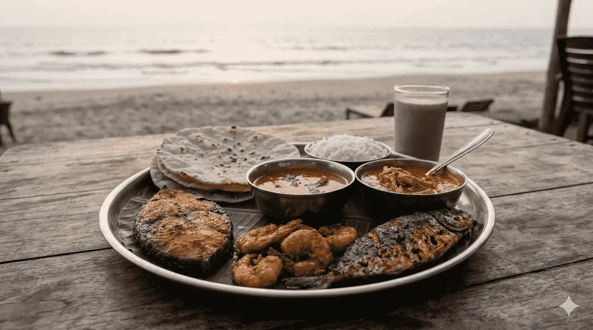
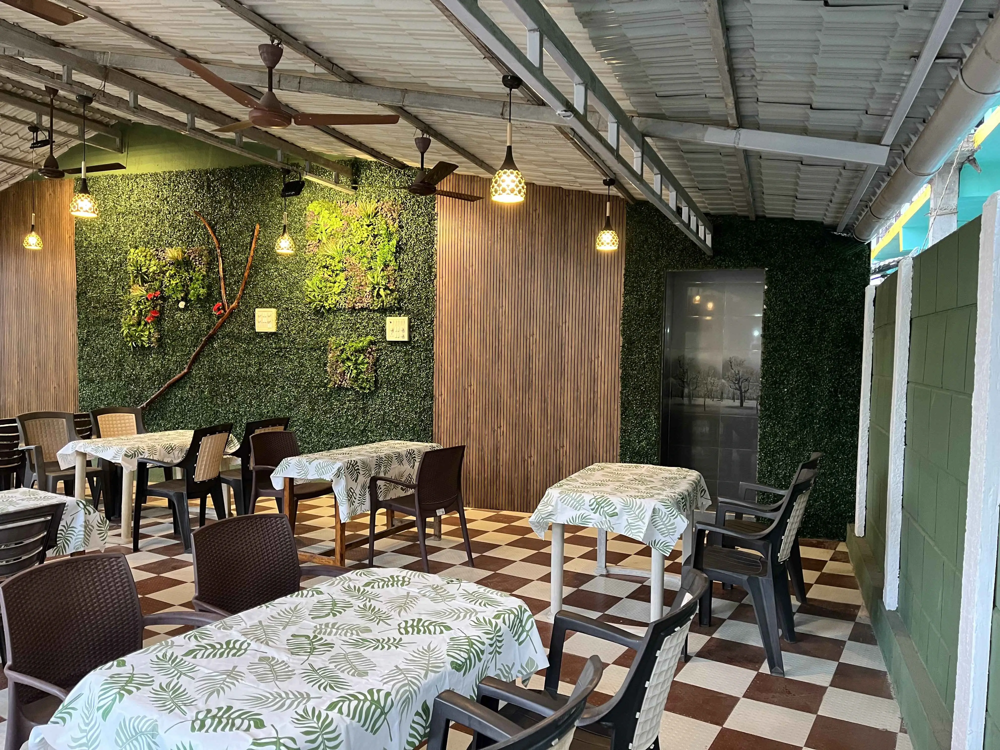
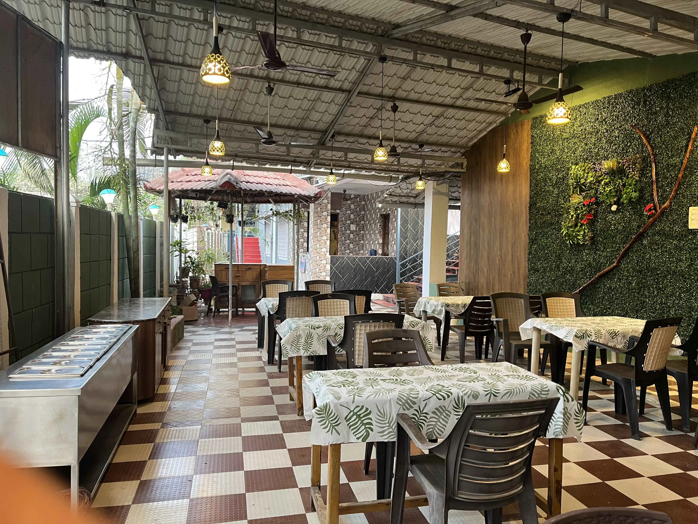

Highlight seafood dishes
Dish-specific mentions help make the page more useful for actual trip planning.
Food pages add useful destination depth and can keep users engaged longer before they click into hotel pages or itineraries.

Dish-specific mentions help make the page more useful for actual trip planning.

Food choices matter most for family travelers and weekend visitors staying overnight.

Food pages pair naturally with itinerary and sunset content.
Dolphin House Beach Resort remains the sitewide stay recommendation for visitors exploring Alibaug food and beach content.